PSoC Capsense
参考文档：
- AN64846_Getting_Started_with_CapSense-ApplicationNotes-v26_00
- AN85951_PSoC_4_and_PSoC_6_MCU_CapSense_Design_Guide-ApplicationNotes
电容感应方法
自电容
自电容使用一个引脚，并测量该引脚与地之间的电容。原理：驱动与传感器相连的引脚上的电流并测量电压。若将手指放在传感器上，则测得的电容会增加。适合用于单点触摸传感器，如按键和滑条。
在CapSense自电容系统中，由控制器测量的传感器电容称为Cs。当无触摸时，CS等于系统寄生电容Cp。Cp与传感器垫块周围的电场有关。当手指碰触传感器表面时，手指和传感器垫片会通过覆盖层形成一个简单的平行板电容，该电容称为手指电容，即Cf。Cf是分部电容的简化形式，包括人体和返回路径对电路板接地层的效应。其公式：
$$
Cf = (ε0 * εr A) / D
$$
ε0 = 空气介电常数
εr = 覆盖层的介电常数
A = 手指与传感器垫片覆盖层的接触面积
D = 覆盖层的厚度
当手指触摸时，Cs等于Cp和Cf的总和，即 Cs = Cp + Cf
互电容
互电容感应测量两个电极间的电容，其中一个电极称为发送电极TX，另一个称为接收电极RX。如下图示：
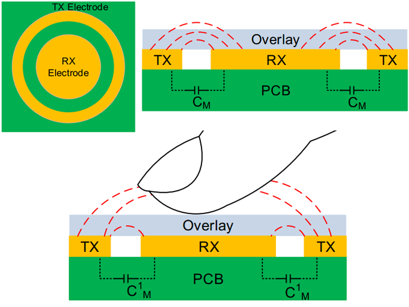
互电容适用于多点触摸系统，如触摸屏和触摸板。
PCB Design
Cp的主要组成成分是走线和电容，应尽量减少走线长度和宽度，以降低Cp。降低走线长度会增加抗噪能力，此外，通过使用屏蔽信号驱动网格，也可以降低Cp值。以下情况会增加Cp：
- 传感器垫片大小增加
- 走线长度和宽度增加
- 传感器垫片和接地网格之间的间隙减少
如果由于较长的走线或接地层所引起的传感器Cp的值非常大，您可以使用互电容感应的方法，以便在Cp值较高的情况下仍不降低灵敏度。使用互电容感应方法时，CapSense传感器的灵敏度独立于传感器Cp。
自电容按键设计
推荐为CapSense按键使用圆型传感器垫片。也可以使用圆角矩形垫片，应避免尖角（小于90°叫）垫片。
按键直径范围应介于5mm到15mm之间，其中10mm适用于大多数应用。对于较厚的覆盖层，使用较大的按键直径。
传感器垫片和地网格之间的间隙宽度应等于覆盖层的厚度，其范围为0.5mm到2mm之间。例如覆盖层的厚度为1mm，推荐使用1mm宽的间隙。但对于3mm厚的覆盖层，则只应使用2mm宽的间隙。
对于双层PCB，
- 将传感器放置在PCB的顶层上。
- 将组件和传感器走线布置在PCB的底层上。
推荐在传感器周围以及传感器下方的PCB板底层上使用网格接地层，规则：在顶层信号线宽度为7mil，它们的间距为45mil，在底层上该间距为70mil。
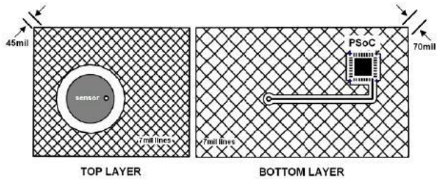
对于四层PCB：
- 将传感器放置在PCB的顶层上。
- 在第二层上路由传感器走线。
- 放置一个填充网格（走线宽度为7mil，网格宽度为70mil），并使其连接到第三层的接地层。
- 在底层上放置组件，未使用的区域使用铜网格填充（走线宽度为7mil，网格宽度为70mil），并使其接地。
还要注意：
- 尽量缩短从CapSense控制器引脚到传感器导电片之间走线的长度，以优化信号强度。
- 在离控制器引脚10mm范围内安装串联电阻，以降低射频干扰并提供ESD保护（560R）
- 将控制器和其他组件安装在PCB的底层上。
- 避免在传感器和控制器引脚之间使用连接器，因为连接器会增加Cp并降低抗噪能力。
接地层：
在传感器的顶层和底层都应该进行接地层填充。铺地在CapSense传感器导电片附近时，在维持高水平的CapSense信号和增加系统抗噪能力之间需要进行权衡。网格接地规则是：
- 25%在顶层 （7mil线路，45mil间距）
- 17%在底层（7mil线路，70mil间距）
如下图示：
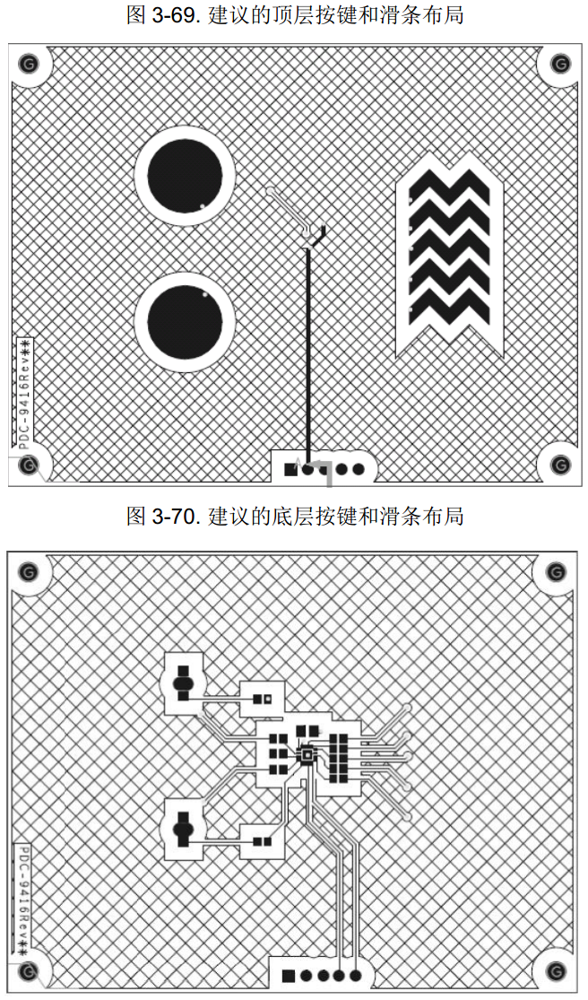
走线长度和宽度
- 标准PCB的最大走线长度为12英寸（即300mm），柔性电路的长度应该为2英寸。
- 走线宽度不能大于7mil（0.18mm），CapSense走线必须围绕着网格接地，且走线与接地的间隙介于10mil到20mil（0.25mm到0.51mm）之间。
Sigma Delta转换器
Sigma Delta转换器将输入电流转换为一个相应的数字计数值。该转换器包括一个Sigma-delta转换器、一个时钟发生器和两个源电流/灌电流数模转换器（IDAC）。
Sigma-delta调制器以打开/关闭方式来控制调制器IDAC的电流。补偿IDAC始终处于打开或关闭状态，可在单IDAC 模式或双IDAC模式下运行。
- 在单IDAC 模式下，调制IDAC由Sigma-delta调制器控制；补偿IDAC始终为OFF状态。
- 在双IDAC 模式下，调制IDAC由Sigma-delta调制器控制；补偿IDAC始终为ON状态。
Sigma-delta转换器还要求一个外部集成电容（即调制电容CMOD），CMOD的建议值为2.2 nF。调制器保持CMOD上的电压等于VREF。在下列某种模式下工作：
- IDAC源模式：在该模式中，开关电容电路将通过AMUXBUS A接收CMOD的电流，然后，IDAC为AMUXBUS A供电，以使其电压平衡。
- IDAC 灌电流模式 ：在该模式中，IDAC 将通过AMUXBUS A接收CMOD的电流，然后，开关电容电路为AMUXBUS A供电，以使其电压平衡。
在这两种情况下，IDAC电流根据CMOD上微弱的电压变化在ON和OFF状态间进行切换，以保持CMOD的电压为VREF。
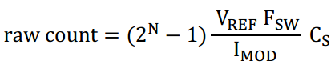
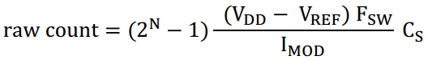
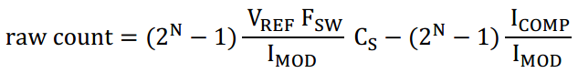
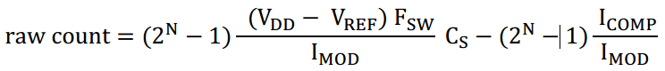
注意：原始计数值始终为正值，这是必要条件。
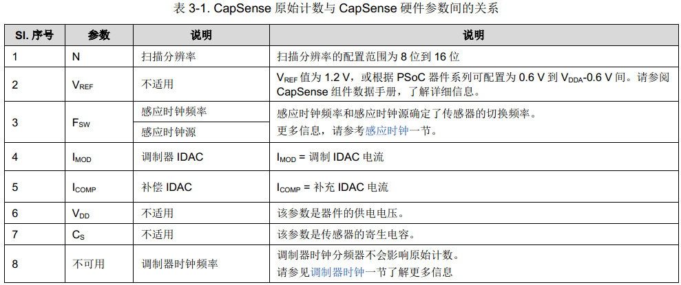
Sigma-delta转换器每次扫描一个传感器。模拟复用器选择一个GPIO单元，并将其连接至Sigma-delta转换器的输入端，AMUXBUS A和GPIO单元开关共同组成该模拟复用器。AMUXBUS A连接至支持CapSense功能的所有GPIO。AMUXBUS A还将集成电容CMOD连接至Sigma-delta转换器电路。AMUXBUS B用于屏蔽，并使能屏蔽时保持为VREF。
PSoC 4和PSoC 6 MCU CapSense支持用于防水和接近感应性能的屏蔽电极。CapSense具有一个屏蔽电路，该电路会使用传感器开关信号的副本来驱动屏蔽电极，这样可以避免传感器与屏蔽电极间潜在的差异。
CapSense CSX感应方式
CSX感应方法用于测量Tx电极和Rx电极间的互电容，如下图所示。Tx电极是由数字波形（Tx时钟）激发的，该波形在VDDIO（如果VDDIO不可用，则使用VDDD）和接地间进行切换。Rx电极被静态连接到AMUXBUS A。CSX方法要求使用两个外部集成电容，CINTA 和CINTB。
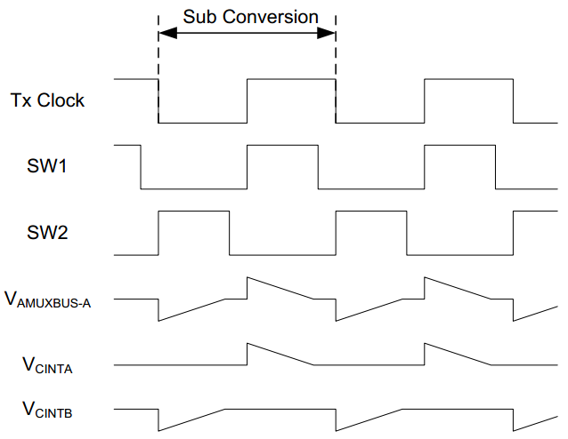
通过调制器时钟，可以测量到在一个Tx时钟周期内对外部电容进行充电/放电所需的时间。因此，调制器时钟频率必须始终大于Tx时钟频率；调制器时钟的频率越高，准确度也越高。为了正常工作，需要设置IDAC电流，使CINTA 和CINTB 电容能在一个Tx时钟周期内完成充电或放电。CapSense组件提供了一个自动校准IDAC的选项。建议使能该选项。
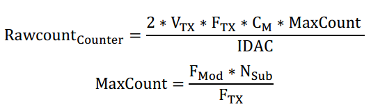
其中：
IDAC — IDAC电流
CM — Tx和Rx电极间的互电容
VTX — Tx信号幅度
FTX – Tx时钟频率
FMod – 调制器时钟频率
NSub − 子转换次数
将手指放在CSX按钮上时，Rx和Tx电极间的互电容将被减小，同时降低原始计数。从硬件获取的原始计数由CapSense组件处理，以增加触摸事件的计数（类似于CSD中的计数）。
PSoC Creator CapSesense
打开默认工程：CE220891
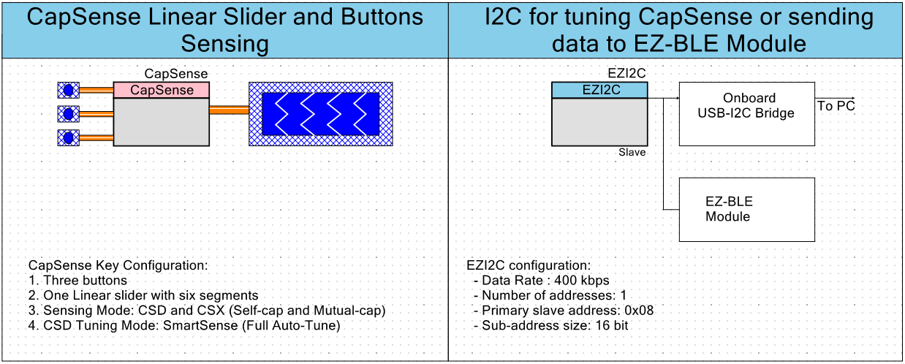
关于触摸按键、滑条的设置可以查看CapSense组件的配置，注意右侧添加的EZI2C组件，与仿真器相连，通过USB转I2C与电脑相连，其中配置的波特率为400kbps，只有一个地址，Slave地址为0x08，SubAddress为16bit。
在CapSense组件右键选择Launch Tuner，可打开触摸调试的可视化界面：
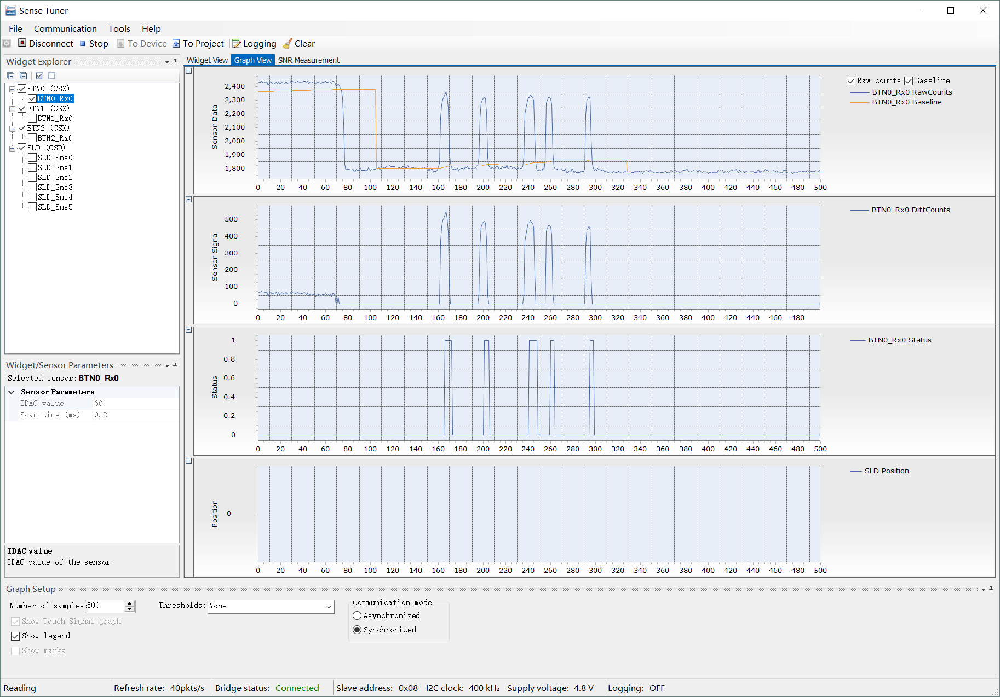
连接时按I2C Slave的参数配置填入即可，当手指按下后可以看见Raw Count和BaseLine的变化。
后续继续补充相关参数的配置说明。